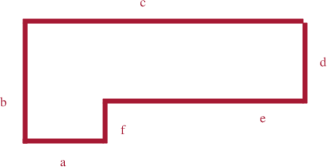
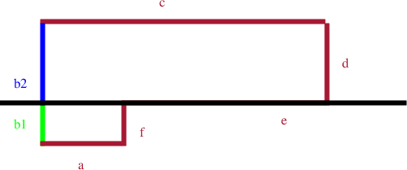
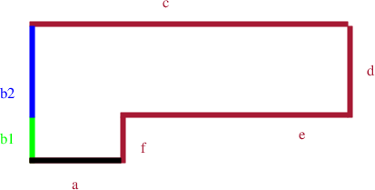
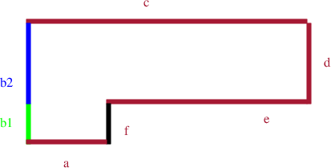
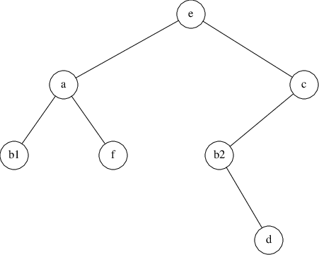
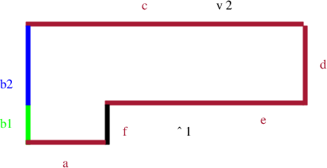

chisel/maps/spiral.txt
define 1 room 1 define 2 room 2 define 3 room 3 define 4 room 4 define O monster monster_demon_imp define H monster monster_demon_hellknight define S worldspawn
chisel/maps/spiral.txt
########################## #1 #2 # # . # # . # # . # # # # #....##############...#### #3 #4 # # # O O O # # S # # # # O O O # # # # ##########################
$ cd
$ cd Sandpit/chisel/python
$ ./developer-txt2map
../maps/spiral.txt
txt2pen: pass Total rooms = 4 Total cuboids = 769 Total cuboids expanded (optimised) = 0 Total entities used = 89 entities unused = 4007 Total brushes used = 769 pen2map: pass
PROCEDURE makeTree (polyList: polygon) : tree;
VAR
root: polygon ;
backList, frontList: polygonP ;
p, backPart, frontPart: polygon ;
BEGIN
IF polyList = NIL
THEN
RETURN NIL
ELSE
root := selectAndRemovePolygon (polyList) ;
backList := NIL ;
frontList := NIL ;
FOR p in polyList DO
IF p is in front of root
THEN
frontList := addToList (frontList, p)
ELSIF p is behind root
THEN
backList := addToList (backList, p)
ELSE
(* polygon, p, must be split as it spans across, root. *)
splitPolygon (p, root, frontPart, backPart) ;
frontList := addToList (frontList, frontPart) ;
backList := addToList (backList, backPart) ;
END
END ;
RETURN combineTree (makeTree (frontList),
root,
makeTree (backList))
END
END makeTree;

polyList = [a, b, c, d, e, f] tree = []

polyList = [a, b1, b2, c, d, e, f]
tree = [makeTree ([b1, a, f]), # left node, below
e, # pivot node
makeTree ([b2, c, d])] # right node, above

polyList = [b1, a, f]
tree = [combineTree ([], # left, below
a,
makeTree ([b1, f])] # right, above

tree = [b1, f, []]
tree = [combineTree ([], # left, below
a, # pivot node
makeTree ([b1, f])] # right, above
tree = [a, b1, f]
tree = [makeTree ([a, b1, f]), # left, below
e,
makeTree ([b2, c, d])] # right, above
tree = [[a, b1, f], # left, below
e,
makeTree ([b2, c, d])] # right, above

PROCEDURE displayTree (tree)
BEGIN
IF tree # NIL
THEN
IF Viewer is in front of tree->line
THEN
(* display back child, root, front child. *)
displayTree (tree->left) ; (* back. *)
displayLine (tree->line) ;
displayTree (tree->right) (* front. *)
ELSE
(* display front child, root and back child. *)
displayTree (tree->right) ; (* front. *)
displayLine (tree->line) ;
displayTree (tree->left) (* back. *)
END
END
END displayTree ;

This document was produced using groff-1.22.